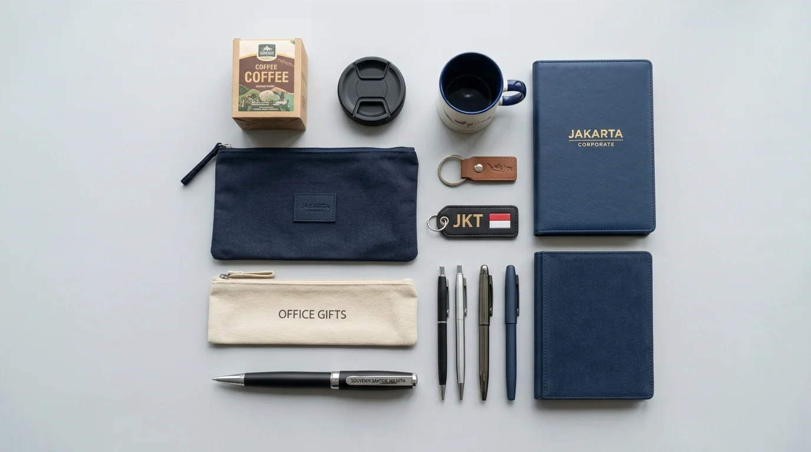

Pilihan Paket Souvenir Perusahaan Fungsional Elegan
 Tim Redaksi Souvenir Kantor Jakarta
19 Agustus 2026
7 Menit Baca
Tim Redaksi Souvenir Kantor Jakarta
19 Agustus 2026
7 Menit Baca

Barang fungsional seperti tempat minum termo, pouch organizer, dan perlengkapan mencatat mendominasi efektivitas promosi hingga 85%. Penggunaan barang harian secara berulang memperluas jangkauan eksposur merek perusahaan tanpa biaya tambahan. Kustomisasi logo dengan metode cetak presisi menjamin ketahanan tampilan merek dalam jangka panjang. Layanan pengadaan terpercaya menyediakan pilihan kombinasi variatif yang siap diproduksi massal secara efisien.
Pilihan paket souvenir perusahaan menyajikan beragam kombinasi barang promosi bernilai guna tinggi yang dirancang khusus untuk menunjang produktivitas kerja harian karyawan dan mitra bisnis.
- Produk Apa Saja yang Menjadi Pilihan Paket Souvenir Perusahaan Terpopuler untuk Instansi?
- Mengapa Aspek Fungsionalitas Sangat Krusial dalam Pemilihan Paket Souvenir Perusahaan?
- Bagaimana Alur Pemesanan Paket Souvenir Perusahaan Fungsional untuk Pesanan Grosir?
- Pertanyaan Umum Seputar Pilihan Paket Souvenir Perusahaan (FAQ)
- Kesimpulan Praktis
Produk Apa Saja yang Menjadi Pilihan Paket Souvenir Perusahaan Terpopuler untuk Instansi?
Produk yang menjadi pilihan paket souvenir perusahaan terpopuler meliputi tumbler stainless steel, pouch kulit PU, notebook A5 softcover, serta tempat kartu nama sintetis.
Berdasarkan Data Survei Kepuasan Penerima Merchandise Korporat 2025/2026, sebanyak 87% responden menyimpan dan menggunakan barang pemberian instansi jika produk tersebut mendukung aktivitas kerja harian. Mengalokasikan anggaran untuk barang berdaya guna tinggi jauh lebih efektif dalam membangun hubungan jangka panjang dibandingkan memberikan barang pajangan.
- 1 Tumbler Stainless Steel Insulasi Vakum
- 2 Pouch Organizer Kulit Sintetis Multi-Kompartemen
- 3 Paket Agenda Kerja dan Pulpen Gel Custom
- 4 Tempat Kartu Nama Kulit Sintetis
- 5 Payung Lipat Otomatis Ringkas
Tumbler Stainless Steel Insulasi Vakum: Tempat minum berteknologi insulasi vakum ganda (double-wall vacuum insulation) ini mampu mempertahankan suhu minuman panas atau dingin selama berjam-jam. Dilengkapi dengan cetakan logo grafir laser yang tahan gores, tumbler ini menjadi barang utama di meja kerja para profesional.
Pouch Organizer Kulit Sintetis Multi-Kompartemen: Pouch dengan bahan kulit sintetis tebal yang dilengkapi banyak sekat interior sangat berguna untuk merapikan pengisi daya (charger), kabel data, tetikus (mouse), dan dokumen pribadi. Tampilannya yang ringkas memberikan kesan eksklusif saat dibawa menghadiri rapat luar kantor.
Paket Agenda Kerja dan Pulpen Gel Custom: Buku agenda softcover atau hardcover yang dipadukan dengan pulpen gel kustom merupakan kombinasi klasik yang selalu dibutuhkan dalam acara pelatihan maupun rapat koordinasi. Penggunaan harian saat mencatat poin penting memastikan logo instansi Anda terus terlihat oleh pengguna.

Mengapa Aspek Fungsionalitas Sangat Krusial dalam Pemilihan Paket Souvenir Perusahaan?
Aspek fungsionalitas sangat krusial karena menentukan seberapa sering penerima berinteraksi dengan identitas brand yang tertera pada produk souvenir tersebut.
Interaksi Berulang
Produk digunakan setiap hariRetensi Merek
Meningkat hingga 4 kali lipatApresiasi Tulus
Penerima merasa dihargaiKetika sebuah perusahaan memberikan paket souvenir yang berguna, penerima merasa mendapatkan bentuk apresiasi yang tulus. Riset dari Corporate Branding Association 2026 mengungkapkan bahwa produk souvenir yang terpakai berulang kali meningkatkan retensi citra merek hingga 4 kali lipat dibandingkan barang yang tidak memiliki fungsi praktis.
Bagi instansi Anda yang ingin menghadirkan produk promosi berdaya tahan tinggi dengan pengerjaan cetak logo yang presisi, seluruh koleksi fungsional ini dapat dipesan secara mudah melalui Souvenir Kantor Jakarta.
Bagaimana Alur Pemesanan Paket Souvenir Perusahaan Fungsional untuk Pesanan Grosir?
Alur pemesanan paket souvenir perusahaan fungsional dilakukan melalui konsultasi produk, pembuatan sampel desain digital, persetujuan sampel fisik, hingga produksi massal dan pengiriman.
Konsultasi
Pilih kombinasi barangMockup Digital
Visualisasi desain logoSampel Fisik
Cek kualitas & presisiProduksi & Kirim
QC ketat & pengirimanProses pengerjaan yang terstruktur sangat penting untuk memastikan hasil akhir sesuai dengan spesifikasi divisi pengadaan:
- Pemilihan Kombinasi Barang: Menentukan jenis produk, warna, serta teknik kustomisasi logo (sablon, print UV, atau laser engraving).
- Persetujuan Desain Digital (Digital Mockup): Tim desainer menyiapkan visualisasi tata letak logo pada setiap item sebelum proses cetak dimulai.
- Pembuatan Sampel Fisik: Pembuatan 1 set sampel nyata untuk menguji kualitas material, presisi warna, dan kerapian susunan dalam kemasan.
- Produksi Massal dan Pengawasan Kualitas: Pencetakan seluruh pesanan dengan pengawasan ketat sebelum dimasukkan ke dalam kotak pengiriman.
Setiap tahapan produksi ditangani oleh tenaga ahli terampil agar pesanan selesai tepat waktu. Percayakan kebutuhan merchandise kantor Anda kepada Souvenir Kantor Jakarta untuk pengalaman transaksi yang aman dan terpercaya.
Pertanyaan Umum Seputar Pilihan Paket Souvenir Perusahaan (FAQ)
Butuh Pilihan Paket Souvenir Perusahaan Fungsional?
Konsultasikan kebutuhan paket souvenir perusahaan fungsional untuk acara perusahaan Anda dengan tim kami untuk mendapatkan rekomendasi kombinasi produk terbaik.
Konsultasi SekarangKesimpulan Praktis
Menentukan pilihan paket souvenir perusahaan yang tepat berpusat pada nilai kegunaan harian dan kerapian kustomisasi logo. Dengan memilih barang fungsional seperti tumbler vacuum, pouch kulit, atau notebook agenda, pesan promosi perusahaan Anda akan tersampaikan secara berkelanjutan. Segera wujudkan paket merchandise kantor impian perusahaan Anda dengan melakukan pemesanan di Souvenir Kantor Jakarta sekarang juga.